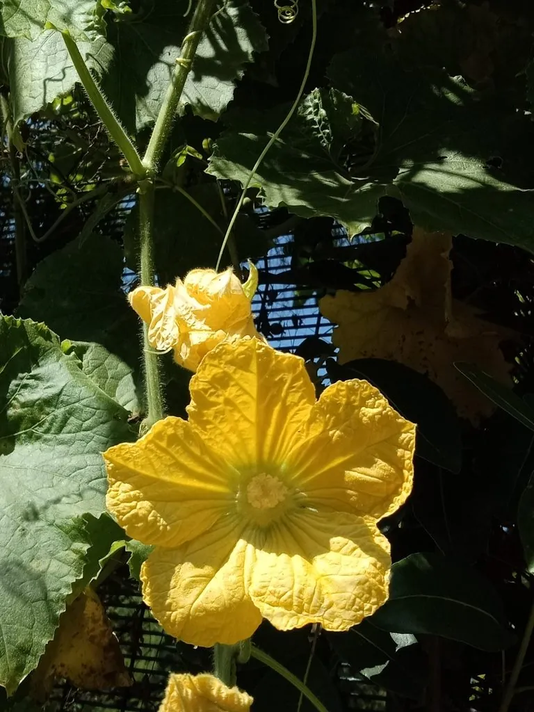

农作物与经济植物 · 植物界
冬瓜 Benincasa hispida

冬瓜的果实个头大、耐储运，富含水分和钾，可炖汤、红烧和做冬瓜糖，是夏季消暑的常见蔬菜作物。
- 分类
- 门被子植物门纲双子叶植物纲目葫芦目科葫芦科属冬瓜属
- 栖息环境
- 高温湿润的菜地，喜光照充足、深厚排水良好土壤
- 地理分布
- 原产中国南方与东南亚，现亚洲各地广泛栽培
- 保护级别
- 暂无评估（栽培作物）
物种志
冬瓜是一年生蔓生草本，茎粗壮、有棱和卷须，密生白色硬毛。叶片掌状 5–7 裂，表面粗糙。花单性同株，黄色，五瓣。果实为瓠果，长圆柱形或近球形，成熟时果皮有白色蜡质粉霜，因此又名“白瓜”；果肉白色、厚实，内含扁卵形种子。
冬瓜原产中国南方与东南亚，栽培历史已有 2000 多年，是夏季重要的蔬菜。它喜高温湿润、光照充足，耐热不耐寒，适宜在土层深厚、排水良好的土壤中种植，多搭架或爬地栽培。果实富含水分、钾和膳食纤维，热量低，可炖汤、红烧、清炒、做馅，也可加工成冬瓜糖、冬瓜茶；果皮和种子可入药，有清热利尿、消肿之效。冬瓜耐储运，是夏秋季节的重要蔬菜。
形态与习性
- 果实长圆柱形或近球形，果肉白色
- 果皮成熟时有白色蜡质粉霜
- 花黄色，雌雄同株
- 用途炖汤、红烧、冬瓜糖、冬瓜茶
- 药用果皮与种子清热利尿
趣味知识
- 冬瓜成熟后表面有一层白色蜡粉，像结了霜，所以叫“冬瓜”。
- 冬瓜含水量高、热量低，是夏季消暑的好食材。
- 冬瓜耐储运，是夏秋季节的重要蔬菜。